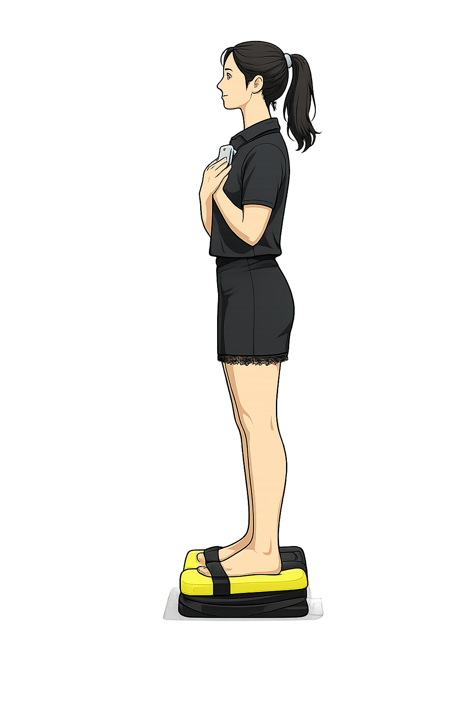
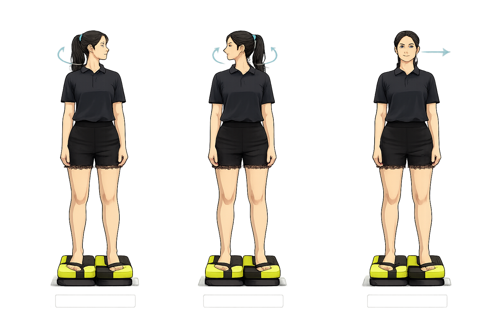

Misura quanto il tuo corpo resta stabile, prima e dopo l'esercizio.
Tieni il telefono al centro del petto, in verticale, schermo verso il petto (sempre uguale prima e dopo), e segui la voce.
Piedi sulla croce (salvo diversa indicazione del professionista).
Scegli un punto dove poter guardare lontano davanti, a destra e a sinistra: le tre direzioni devono essere libere e simili tra loro. Un ostacolo vicino da un solo lato falsa il risultato.

Esegui la tecnica sul cuscino.
Confronto tra il test svolto prima e dopo i 3 Respiri. Indicazione di benessere, non una diagnosi medica.